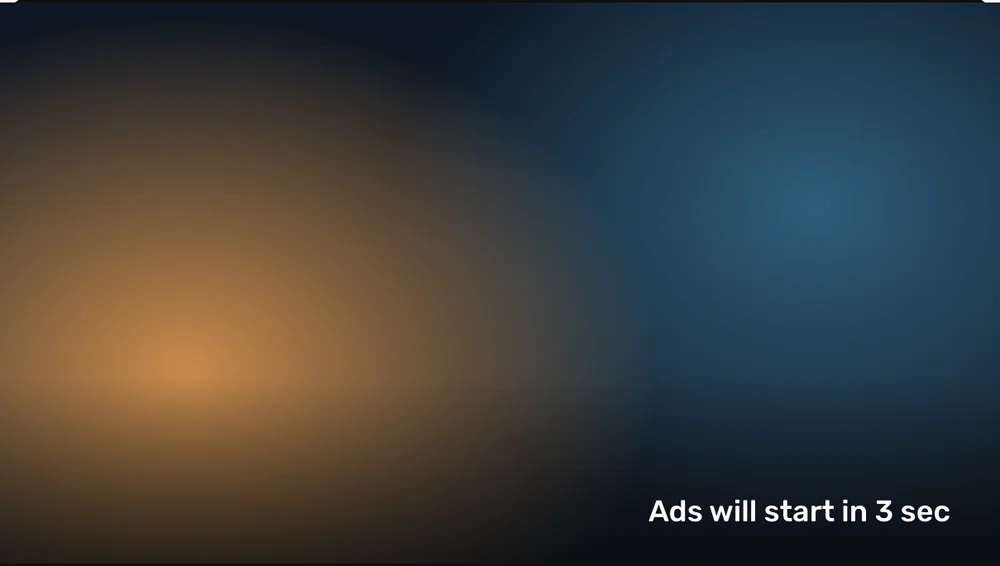
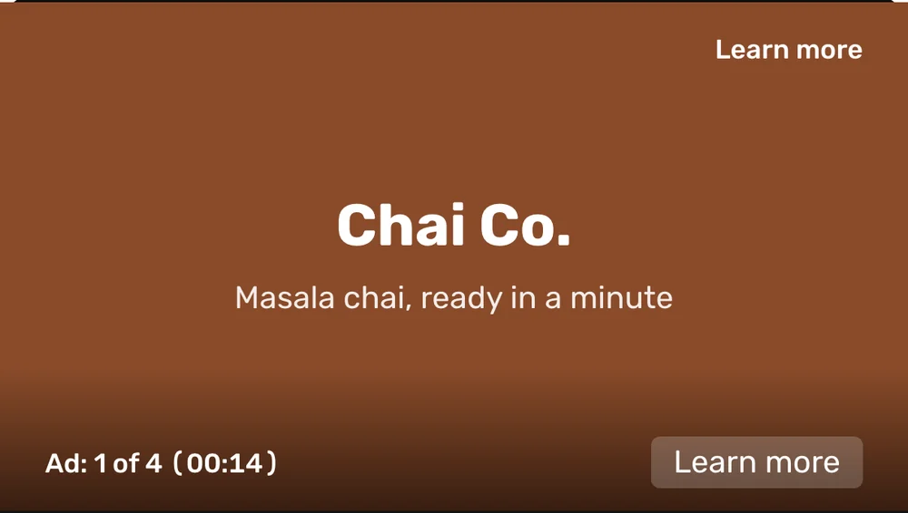
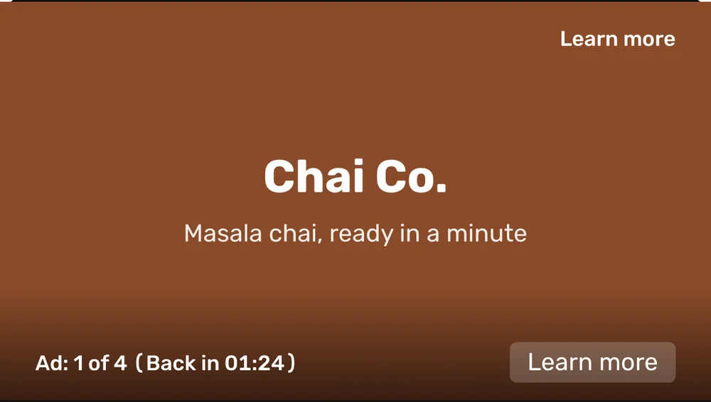
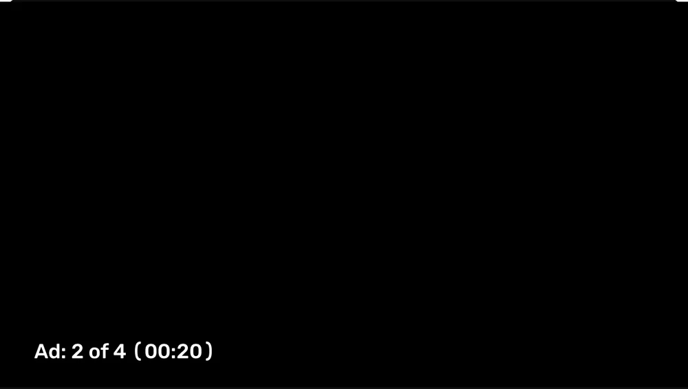
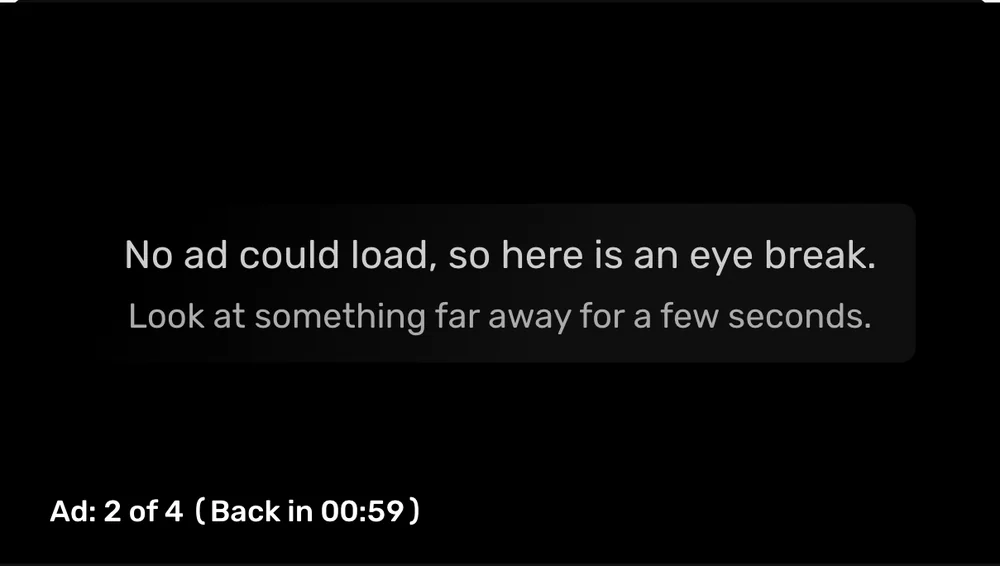
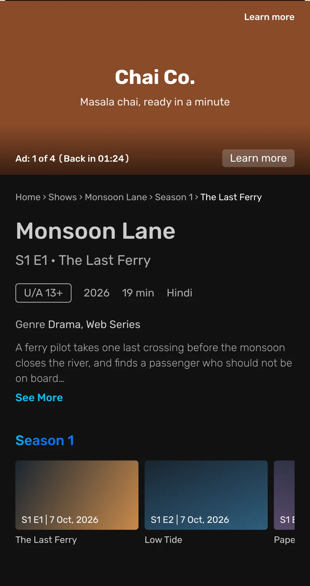
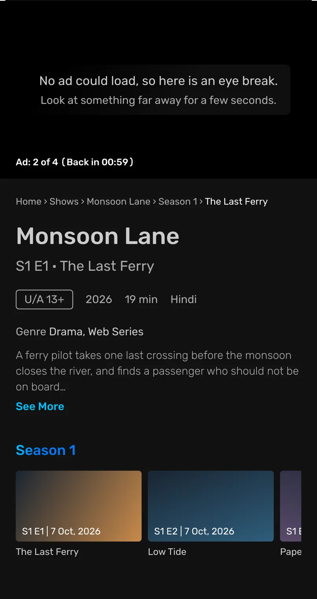
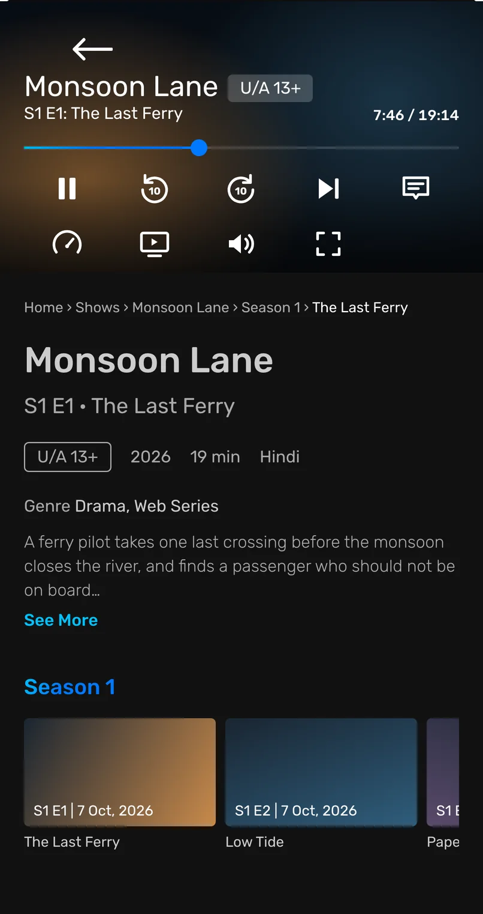

Case study 03 · Concept feature · Working prototype
Four ads, no skip. Now you know when your show is back.
- Role
- Product designer
- Product
- Amazon MX Player
- Platform studied
- iPhone app
- Context
- Self-directed concept, 2026
- Tools
- Claude Code, React, FigJam
- Research
- 246 reviews, and my own time in the app
- Testing
- Not tested with users yet
Why I Chose This Product
MX Player is free, so it runs on ads. Ads are also the top complaint in its reviews. On iPhone there is no way to pay them away. So the ad break is where design can help.
Problem Identification (what's broken and why)
I watched an episode. Four ads played back to back, with no skip. The timer counted one ad at a time, so I never knew when my show would be back.


Reviews add two more problems. An ad that never loads locks you out. And the same ad plays again and again.
Research & Competitive Benchmarking
I read 246 low-star reviews, used the app, and looked at how YouTube, Hulu and Netflix handle ad breaks.
01 · Too many ads
The top complaint in reviews, on iPhone and on Android.
02 · Ads that freeze or repeat
An ad never loads and locks you out. Or the same ad comes back.
03 · No sign of the end
From my own viewing. The timer covers one ad, not the break.
The opening
I can't change that viewers see ads. I can change how clear the wait is.
My first idea was wrong. A stuck ad looked like the main problem, but Android reviews barely mention it.
Design Goals & Constraints
Keep every ad. Make the wait clear and safe.
The goal is not fewer ads. Ads pay for the app. The goal is a wait you can see the end of.
For the viewer
Less guessing. Less frustration. A break with a clear end.
For the business
The same number of ads. Every slot still filled. Fewer viewers leaving.
- No new visual parts. The timer and the text are the player's own.
- What works stays: the warning, the ad count, the Learn more button.
Key Design Changes & Rationale
- Show the whole break. "Back in 01:24" replaces a timer for one ad.
- Never leave the viewer stuck. A failed ad is swapped for another, so the break keeps moving.
- No repeats. The same ad never plays twice in one break.
An idea I'm exploring: if no ad can load at all, a short eye break replaces the black screen. I would test it first.
Before vs. After
Left is today. Right is the concept.



What I'd Validate If This Were Real
The main number: the share of viewers who leave during an ad break. It should go down.
What must not get worse:
- Ads shown per session. This must not drop.
- Episodes watched to the end. This should go up.
- Time spent watching. This should hold or grow.
Limitations & Honest Caveats
- Four ads in a row still feels bad. Design can't fix the number of ads.
- The MX Player team has likely thought of this, and knows things I can't see.
- Nobody has tested it. I was the only viewer.
- I used the iPhone app only. Most users are on Android.
Reflections
Most of the work was taking things away. I designed a counter, then learned the app already has one. I designed a progress bar, then learned the app has none. What stayed is small, and it fits the product.
Usability Testing (Not Done Yet)
Next, I'll show five MX Player viewers both versions and ask one thing: when do you think your show comes back? If the new timer doesn't help them answer, the first change is wrong.
Final Prototype & Key Screens
A working prototype. You can make an ad fail, slow the network, and switch between today and the concept.

The whole break, counted.

No ad loads. The fallback I'm exploring.

Back to the show.
Outcomes & Reflection
Nothing shipped, so there is no result to claim. What I have is a small, careful change to a moment most viewers dislike, and a clear way to test it.
Next case study Referral Status, a LinkedIn Concept →